Change analysis for Ukraine for PRIMAP-hist v2.8_final compared to
v2.7_final
This changelog is published under the creative commons non-commercial
share alike license. For more information see creativecommons.org.
Overview over
emissions by sector and gas
The following figures show the aggregate national total emissions
excluding LULUCF AR6GWP100 for the country reported priority scenario.
The dotted lines show the v2.7_final data.
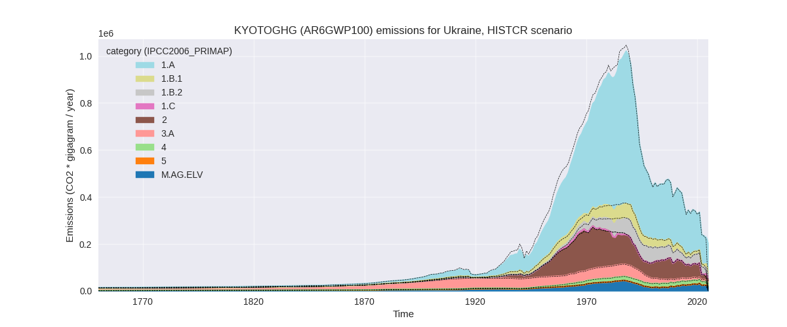
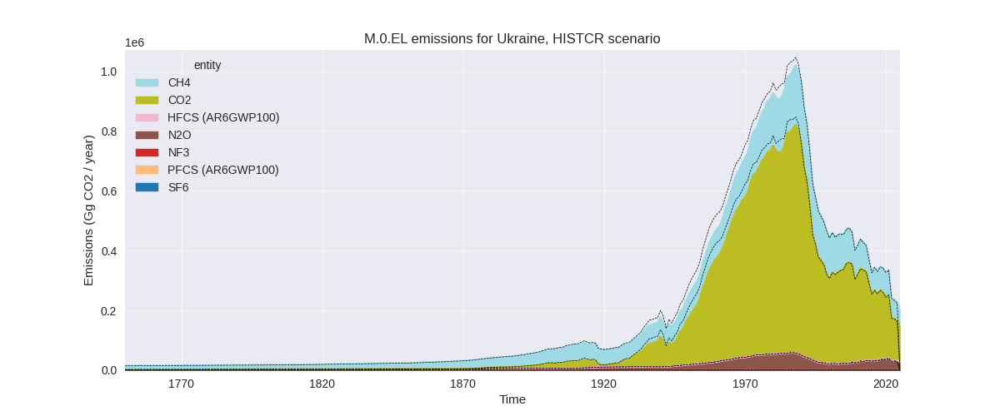
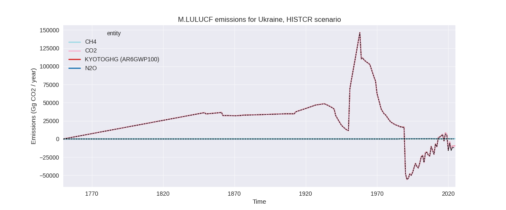
The following figures show the aggregate national total emissions
excluding LULUCF AR6GWP100 for the third party priority scenario. The
dotted lines show the v2.7_final data.
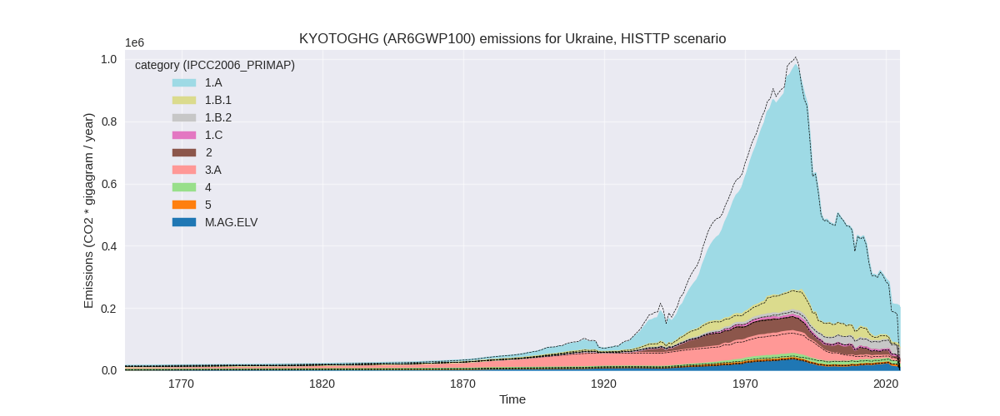
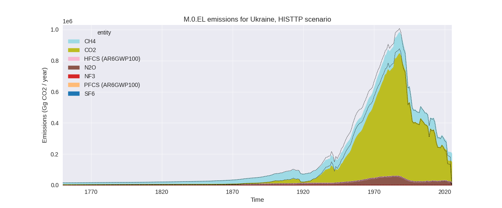
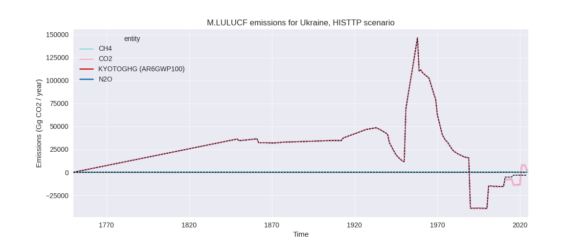
Used country reported data
The changelog with this information is available upon request for
non-commercial customers. Paying commercial customers will be provided
with the information.
Overview over changes
In the country reported priority scenario we have the following
changes for aggregate Kyoto GHG and national total emissions excluding
LULUCF (M.0.EL):
- Emissions in 2024 have changed by 2.1%% (4628.81 Gg CO2 / year)
- Emissions in 1990-2024 have changed by 0.0%% (159.47 Gg CO2 / year)
In the third party priority scenario we have the following changes
for aggregate Kyoto GHG and national total emissions excluding LULUCF
(M.0.EL):
- Emissions in 2024 have changed by 15.7%% (28412.74 Gg CO2 / year)
- Emissions in 1990-2024 have changed by 1.0%% (4584.77 Gg CO2 / year)
Most
important changes per scenario and time frame
In the country reported priority scenario the
following sector-gas combinations have the highest absolute impact on
national total KyotoGHG (AR6GWP100) emissions in 2024
(up to 10 with either at least 0.2% impact on total emissions or at
least 20% change):
- 1: 2, CO2 with 12777.67 Gg CO2 / year (165.7%, 5.7%)
- 2: 1.A, CO2 with -12223.74 Gg CO2 / year (-9.9%, -5.5%)
- 3: M.AG.ELV, N2O with 903.00 Gg CO2 / year (3.8%, 0.4%)
- 4: 1.B.2, CH4 with 690.51 Gg CO2 / year (2.5%, 0.3%)
- 5: 1.B.1, CH4 with 638.93 Gg CO2 / year (5.5%, 0.3%)
- 6: 4, CH4 with 536.78 Gg CO2 / year (4.1%, 0.2%)
- 7: 2, N2O with 318.61 Gg CO2 / year (23.5%, 0.1%)
- 8: 1.A, CH4 with 170.51 Gg CO2 / year (104.1%, 0.1%)
In the country reported priority scenario the
following sector-gas combinations have the highest absolute impact on
national total KyotoGHG (AR6GWP100) emissions in
1990-2024 (up to 10 with either at least 0.1% impact on
total emissions or at least 10% change):
In the third party priority scenario the following
sector-gas combinations have the highest absolute impact on national
total KyotoGHG (AR6GWP100) emissions in 2024 (up to 10
with either at least 0.2% impact on total emissions or at least 20%
change):
- 1: 1.A, CO2 with 21981.27 Gg CO2 / year (22.1%, 12.1%)
- 2: 1.B.1, CH4 with 5425.47 Gg CO2 / year (inf%, 3.0%)
- 3: 2, CO2 with 3007.20 Gg CO2 / year (53.5%, 1.7%)
- 4: M.AG.ELV, N2O with -2501.90 Gg CO2 / year (-15.3%, -1.4%)
- 5: 1.B.2, CH4 with 2241.24 Gg CO2 / year (7.4%, 1.2%)
- 6: M.AG.ELV, CO2 with -1528.85 Gg CO2 / year (-66.4%, -0.8%)
- 7: 2, N2O with 1062.75 Gg CO2 / year (81.6%, 0.6%)
- 8: 1.B.1, CO2 with -707.56 Gg CO2 / year (-77.1%, -0.4%)
- 9: 3.A, CH4 with -550.09 Gg CO2 / year (-7.2%, -0.3%)
In the third party priority scenario the following
sector-gas combinations have the highest absolute impact on national
total KyotoGHG (AR6GWP100) emissions in 1990-2024 (up
to 10 with either at least 0.1% impact on total emissions or at least
10% change):
- 1: 1.A, CO2 with 3439.35 Gg CO2 / year (1.1%, 0.8%)
- 2: 4, CH4 with 1391.55 Gg CO2 / year (13.9%, 0.3%)
- 3: M.AG.ELV, CO2 with -477.92 Gg CO2 / year (-22.0%, -0.1%)
- 4: 1.B.2, CO2 with -155.01 Gg CO2 / year (-52.1%, -0.0%)
Notes on data changes
The changelog with this information is available upon request for
non-commercial customers. Paying commercial customers will be provided
with the information.
Changes by sector and gas
For each scenario and time frame the changes are displayed for all
individual sectors and all individual gases. In the sector plot we use
aggregate Kyoto GHGs in AR6GWP100. In the gas plot we usenational total
emissions without LULUCF.
country reported scenario
2024
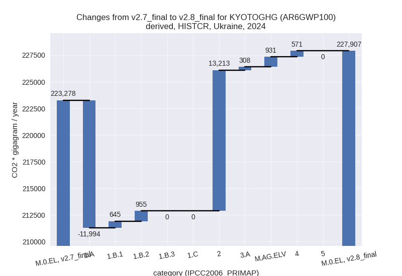
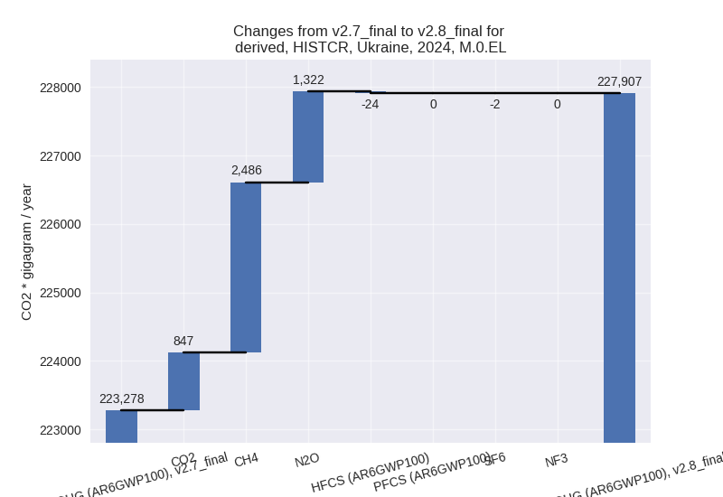
1990-2024
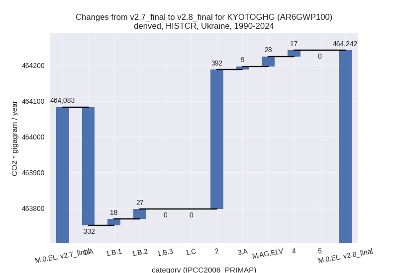
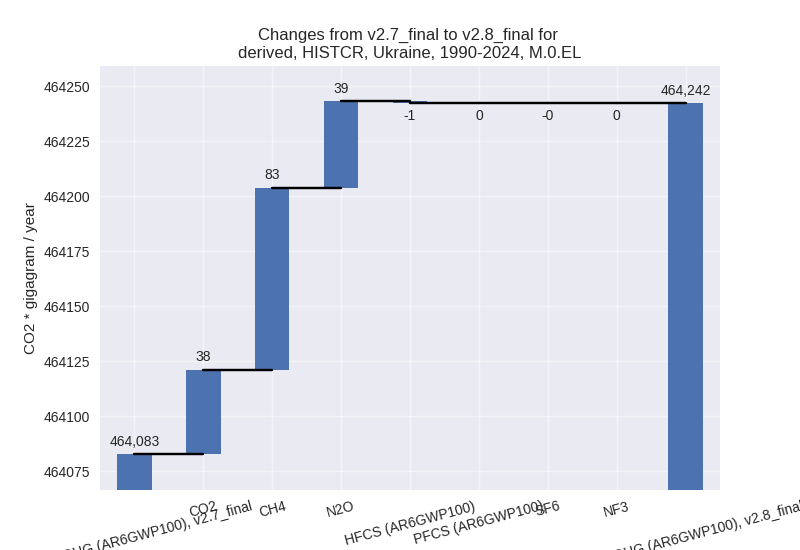
third party scenario
2024
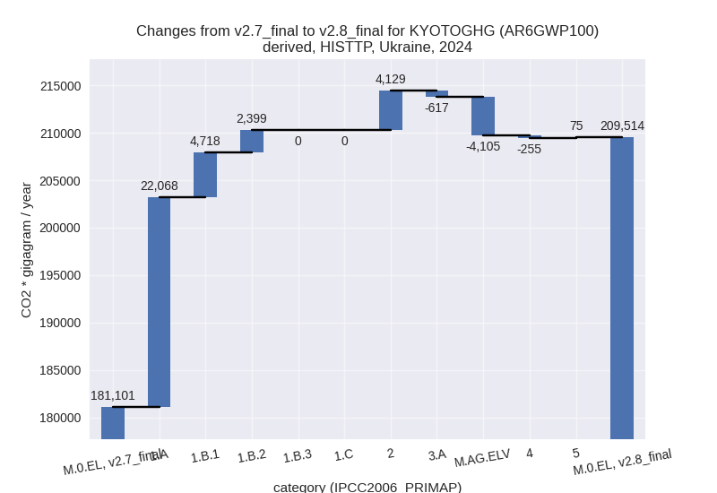
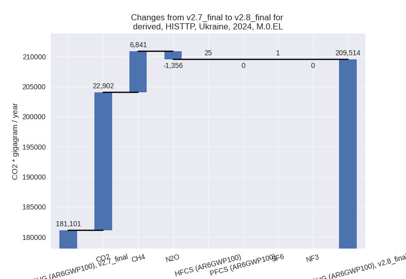
1990-2024
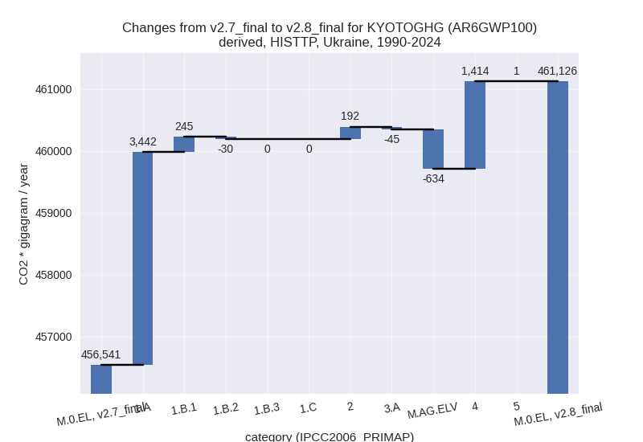
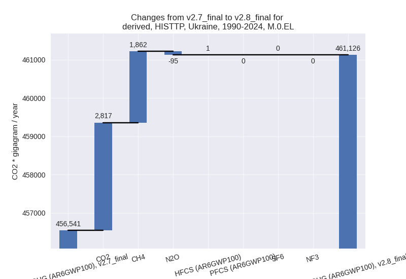
Detailed changes for the
scenarios:
country reported scenario
(HISTCR):
Most important changes
per time frame
For 2024 the following sector-gas combinations have
the highest absolute impact on national total KyotoGHG (AR6GWP100)
emissions in 2024 (up to 20 with either at least 0.2%
impact on total emissions or at least 20% change):
- 1: 2, CO2 with 12777.67 Gg CO2 / year (165.7%), 5.7%)
- 2: 1.A, CO2 with -12223.74 Gg CO2 / year (-9.9%), -5.5%)
- 3: M.AG.ELV, N2O with 903.00 Gg CO2 / year (3.8%), 0.4%)
- 4: 1.B.2, CH4 with 690.51 Gg CO2 / year (2.5%), 0.3%)
- 5: 1.B.1, CH4 with 638.93 Gg CO2 / year (5.5%), 0.3%)
- 6: 4, CH4 with 536.78 Gg CO2 / year (4.1%), 0.2%)
- 7: 2, N2O with 318.61 Gg CO2 / year (23.5%), 0.1%)
- 8: 1.A, CH4 with 170.51 Gg CO2 / year (104.1%), 0.1%)
- 9: 2, CH4 with 142.96 Gg CO2 / year (244.5%), 0.1%)
- 10: M.AG.ELV, CH4 with 8.67 Gg CO2 / year (53.7%), 0.0%)
- 11: 4, CO2 with 4.71 Gg CO2 / year (90.6%), 0.0%)
For 1990-2024 the following sector-gas combinations
have the highest absolute impact on national total KyotoGHG (AR6GWP100)
emissions in 1990-2024 (up to 20 with either at least
0.1% impact on total emissions or at least 10% change):
Changes in the main sectors for aggregate KyotoGHG (AR6GWP100)
are
- 1: Total sectoral emissions in 2022 are 170335.91
Gg CO2 / year which is 70.9% of M.0.EL emissions. 2024 Emissions have
changed by -6.3% (-10394.46 Gg CO2 /
year). 1990-2024 Emissions have changed by -0.1% (-286.13 Gg CO2 / year). For 2024
the changes per gas
are:
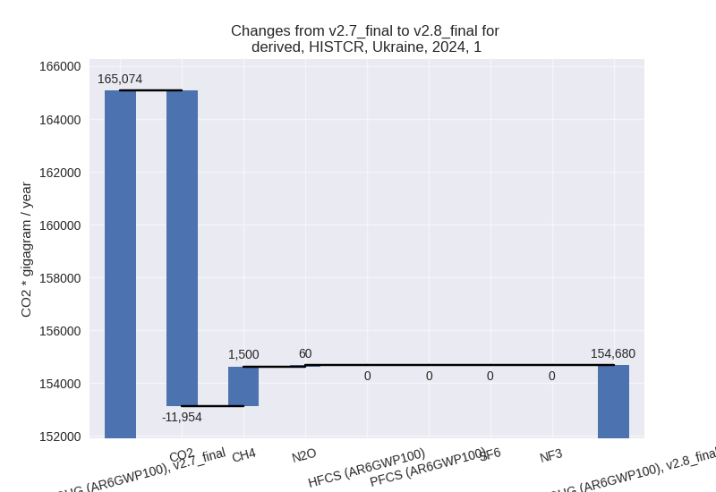
The changes come from the following subsectors:
- 1.A: Total sectoral emissions in 2022 are 124944.21
Gg CO2 / year which is 73.4% of category 1 emissions. 2024 Emissions
have changed by -9.6% (-11993.71 Gg
CO2 / year). 1990-2024 Emissions have changed by -0.1% (-331.83 Gg CO2 / year). For 2024
the changes per gas
are:
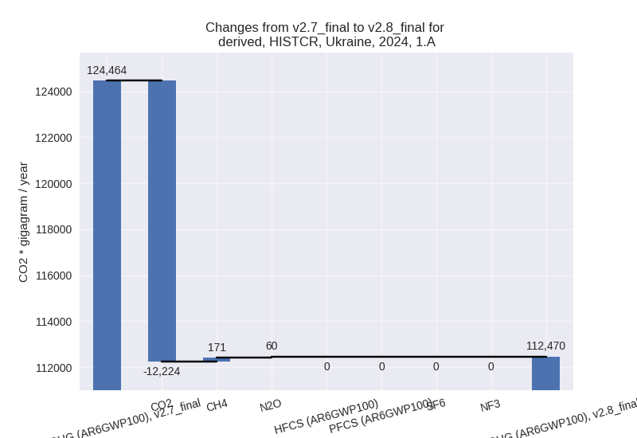
There is no subsector information available in PRIMAP-hist.
- 1.B.1: Total sectoral emissions in 2022 are
12349.42 Gg CO2 / year which is 7.3% of category 1 emissions. 2024
Emissions have changed by 5.5%
(644.63 Gg CO2 / year). 1990-2024 Emissions have changed by 0.1% (18.43 Gg CO2 / year). For 2024 the
changes per gas
are:
There is no subsector information available in PRIMAP-hist.
- 1.B.2: Total sectoral emissions in 2022 are
33042.27 Gg CO2 / year which is 19.4% of category 1 emissions. 2024
Emissions have changed by 3.3%
(954.62 Gg CO2 / year). 1990-2024 Emissions have changed by 0.1% (27.28 Gg CO2 / year). For 2024 the
changes per gas
are:
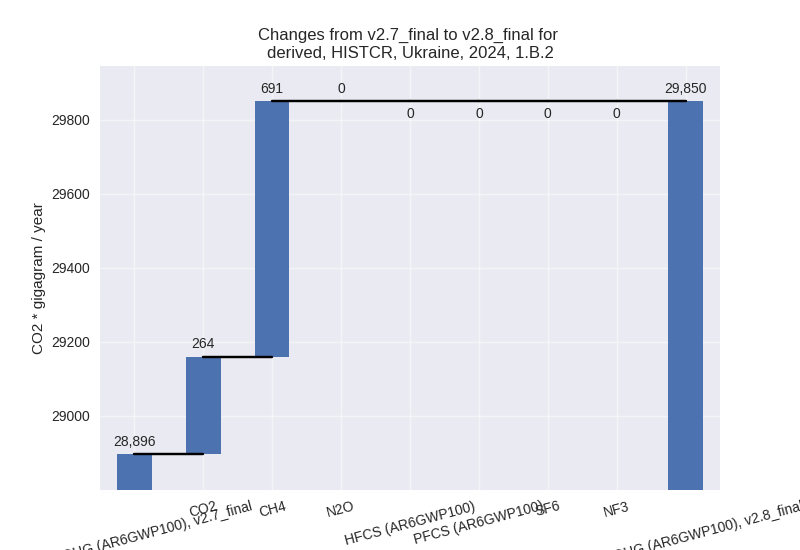
There is no subsector information available in PRIMAP-hist.
- 2: Total sectoral emissions in 2022 are 22002.77 Gg
CO2 / year which is 9.2% of M.0.EL emissions. 2024 Emissions have
changed by 107.8% (13213.36 Gg CO2 /
year). 1990-2024 Emissions have changed by 0.6% (391.58 Gg CO2 / year). For 2024 the
changes per gas
are:
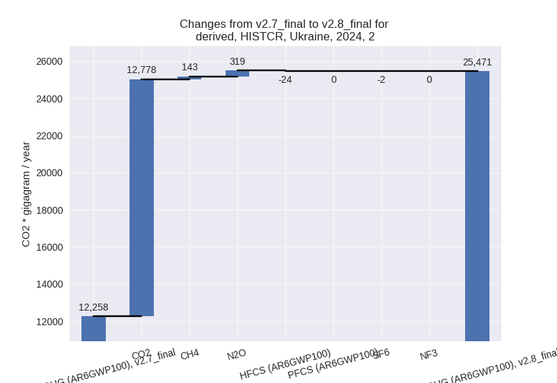
- M.AG: Total sectoral emissions in 2022 are 33182.38
Gg CO2 / year which is 13.8% of M.0.EL emissions. 2024 Emissions have
changed by 3.9% (1238.83 Gg CO2 /
year). 1990-2024 Emissions have changed by 0.1% (36.98 Gg CO2 / year). For 2024 the
changes per gas
are:
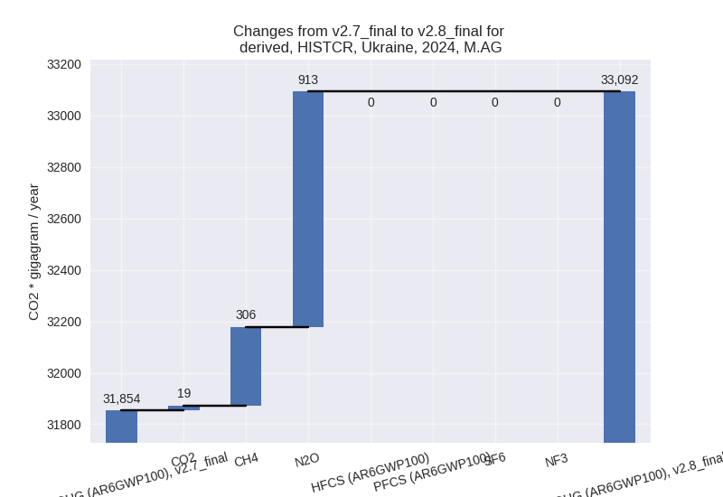
The changes come from the following subsectors:
- 3.A: Total sectoral emissions in 2022 are 8976.06
Gg CO2 / year which is 27.1% of category M.AG emissions. 2024 Emissions
have changed by 3.9% (308.01 Gg CO2
/ year). 1990-2024 Emissions have changed by 0.0% (8.93 Gg CO2 / year). For 2024 the
changes per gas
are:
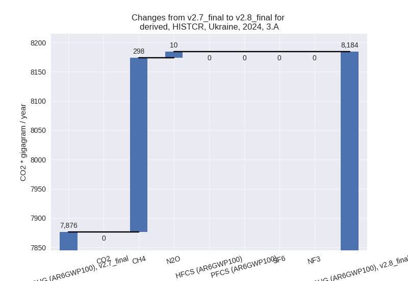
There is no subsector information available in PRIMAP-hist.
- M.AG.ELV: Total sectoral emissions in 2022 are
24206.32 Gg CO2 / year which is 72.9% of category M.AG emissions. 2024
Emissions have changed by 3.9%
(930.82 Gg CO2 / year). 1990-2024 Emissions have changed by 0.1% (28.05 Gg CO2 / year). For 2024 the
changes per gas
are:
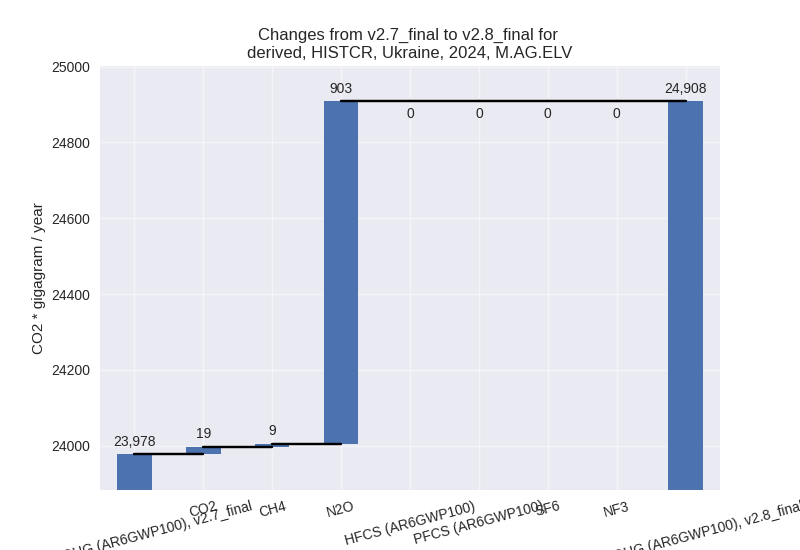
There is no subsector information available in PRIMAP-hist.
- 4: Total sectoral emissions in 2022 are 14760.32 Gg
CO2 / year which is 6.1% of M.0.EL emissions. 2024 Emissions have
changed by 4.1% (571.09 Gg CO2 /
year). 1990-2024 Emissions have changed by 0.1% (17.04 Gg CO2 / year). For 2024 the
changes per gas
are:
- 5: No data
third party scenario (HISTTP):
Most important changes
per time frame
For 2024 the following sector-gas combinations have
the highest absolute impact on national total KyotoGHG (AR6GWP100)
emissions in 2024 (up to 20 with either at least 0.2%
impact on total emissions or at least 20% change):
- 1: 1.A, CO2 with 21981.27 Gg CO2 / year (22.1%), 12.1%)
- 2: 1.B.1, CH4 with 5425.47 Gg CO2 / year (inf%), 3.0%)
- 3: 2, CO2 with 3007.20 Gg CO2 / year (53.5%), 1.7%)
- 4: M.AG.ELV, N2O with -2501.90 Gg CO2 / year (-15.3%), -1.4%)
- 5: 1.B.2, CH4 with 2241.24 Gg CO2 / year (7.4%), 1.2%)
- 6: M.AG.ELV, CO2 with -1528.85 Gg CO2 / year (-66.4%), -0.8%)
- 7: 2, N2O with 1062.75 Gg CO2 / year (81.6%), 0.6%)
- 8: 1.B.1, CO2 with -707.56 Gg CO2 / year (-77.1%), -0.4%)
- 9: 3.A, CH4 with -550.09 Gg CO2 / year (-7.2%), -0.3%)
- 10: 1.B.2, CO2 with 156.24 Gg CO2 / year (74.8%), 0.1%)
- 11: 2, CH4 with 33.59 Gg CO2 / year (252.7%), 0.0%)
- 12: 4, CO2 with -6.47 Gg CO2 / year (-47.4%), -0.0%)
For 1990-2024 the following sector-gas combinations
have the highest absolute impact on national total KyotoGHG (AR6GWP100)
emissions in 1990-2024 (up to 20 with either at least
0.1% impact on total emissions or at least 10% change):
- 1: 1.A, CO2 with 3439.35 Gg CO2 / year (1.1%), 0.8%)
- 2: 4, CH4 with 1391.55 Gg CO2 / year (13.9%), 0.3%)
- 3: M.AG.ELV, CO2 with -477.92 Gg CO2 / year (-22.0%), -0.1%)
- 4: 1.B.2, CO2 with -155.01 Gg CO2 / year (-52.1%), -0.0%)
Changes in the main sectors for aggregate KyotoGHG (AR6GWP100)
are
- 1: Total sectoral emissions in 2022 are 162619.50
Gg CO2 / year which is 76.2% of M.0.EL emissions. 2024 Emissions have
changed by 22.0% (29185.04 Gg CO2 /
year). 1990-2024 Emissions have changed by 1.0% (3656.77 Gg CO2 / year). For 2024 the
changes per gas
are:
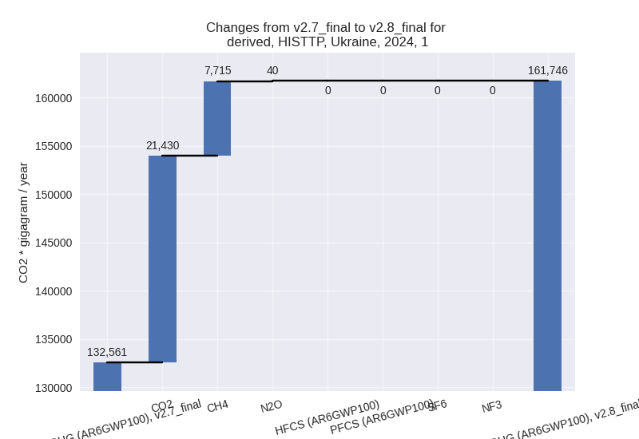
The changes come from the following subsectors:
- 1.A: Total sectoral emissions in 2022 are 124679.58
Gg CO2 / year which is 76.7% of category 1 emissions. 2024 Emissions
have changed by 21.8% (22068.07 Gg
CO2 / year). 1990-2024 Emissions have changed by 1.1% (3442.09 Gg CO2 / year). For 2024 the
changes per gas
are:
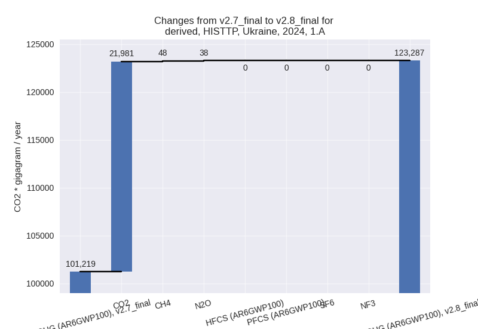
There is no subsector information available in PRIMAP-hist.
- 1.B.1: Total sectoral emissions in 2022 are 7188.31
Gg CO2 / year which is 4.4% of category 1 emissions. 2024 Emissions have
changed by 511.4% (4718.34 Gg CO2 /
year). 1990-2024 Emissions have changed by 0.7% (244.66 Gg CO2 / year). For 2024 the
changes per gas
are:
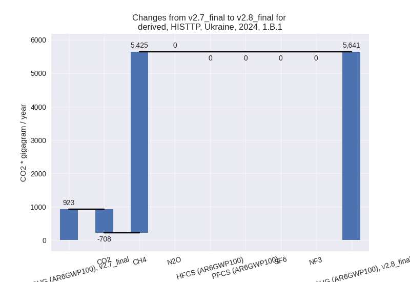
There is no subsector information available in PRIMAP-hist.
- 1.B.2: Total sectoral emissions in 2022 are
30751.61 Gg CO2 / year which is 18.9% of category 1 emissions. 2024
Emissions have changed by 7.9%
(2398.63 Gg CO2 / year). 1990-2024 Emissions have changed by -0.1% (-29.98 Gg CO2 / year). For 2024 the
changes per gas
are:
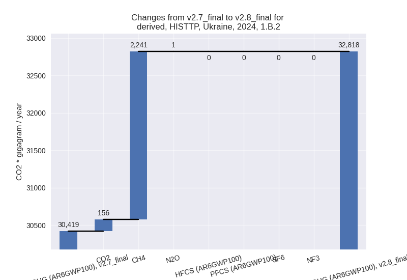
There is no subsector information available in PRIMAP-hist.
- 2: Total sectoral emissions in 2022 are 11832.84 Gg
CO2 / year which is 5.5% of M.0.EL emissions. 2024 Emissions have
changed by 43.3% (4128.92 Gg CO2 /
year). 1990-2024 Emissions have changed by 0.8% (191.89 Gg CO2 / year). For 2024 the
changes per gas
are:
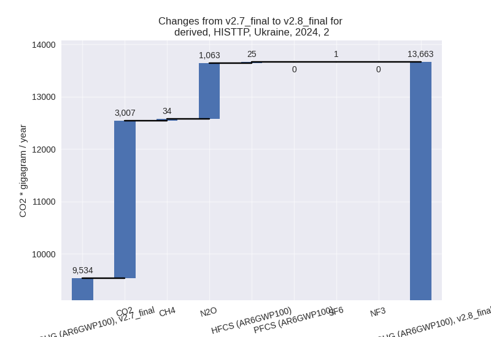
- M.AG: Total sectoral emissions in 2022 are 26996.86
Gg CO2 / year which is 12.7% of M.0.EL emissions. 2024 Emissions have
changed by -17.1% (-4721.63 Gg CO2 /
year). 1990-2024 Emissions have changed by -1.5% (-678.71 Gg CO2 / year). For 2024
the changes per gas
are:
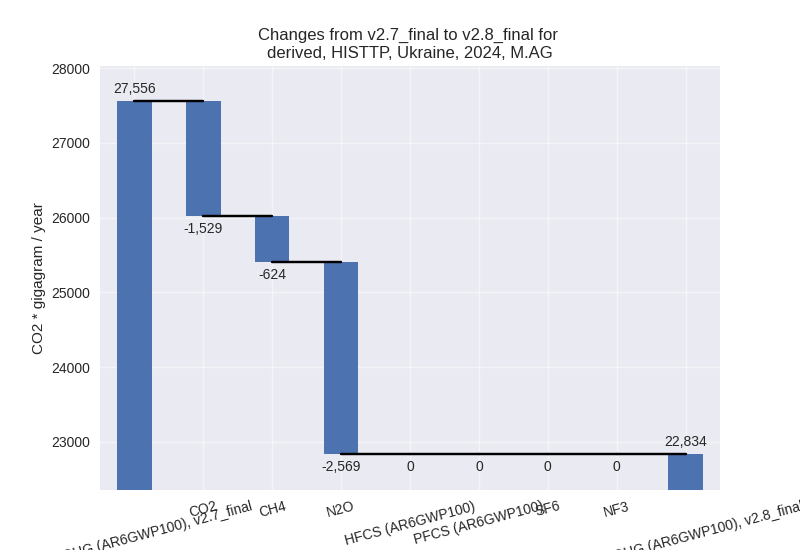
The changes come from the following subsectors:
- 3.A: Total sectoral emissions in 2022 are 9428.85
Gg CO2 / year which is 34.9% of category M.AG emissions. 2024 Emissions
have changed by -7.3% (-616.88 Gg
CO2 / year). 1990-2024 Emissions have changed by -0.2% (-44.99 Gg CO2 / year). For 2024 the
changes per gas
are:
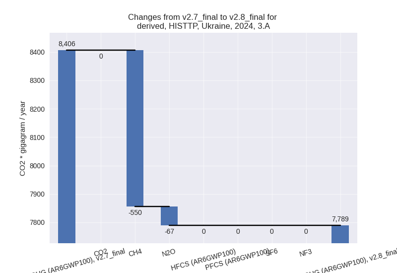
There is no subsector information available in PRIMAP-hist.
- M.AG.ELV: Total sectoral emissions in 2022 are
17568.01 Gg CO2 / year which is 65.1% of category M.AG emissions. 2024
Emissions have changed by -21.4%
(-4104.75 Gg CO2 / year). 1990-2024 Emissions have changed by -3.3% (-633.72 Gg CO2 / year). For 2024
the changes per gas
are:
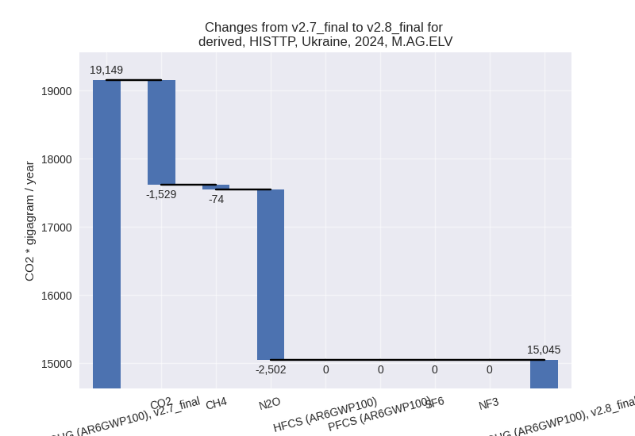
For 1990-2024 the changes per gas
are:
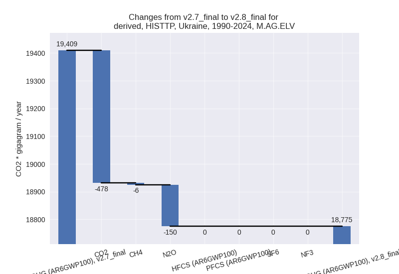
There is no subsector information available in PRIMAP-hist.
- 4: Total sectoral emissions in 2022 are 11364.30 Gg
CO2 / year which is 5.3% of M.0.EL emissions. 2024 Emissions have
changed by -2.3% (-254.66 Gg CO2 /
year). 1990-2024 Emissions have changed by 13.1% (1413.75 Gg CO2 / year). For 2024
the changes per gas
are:
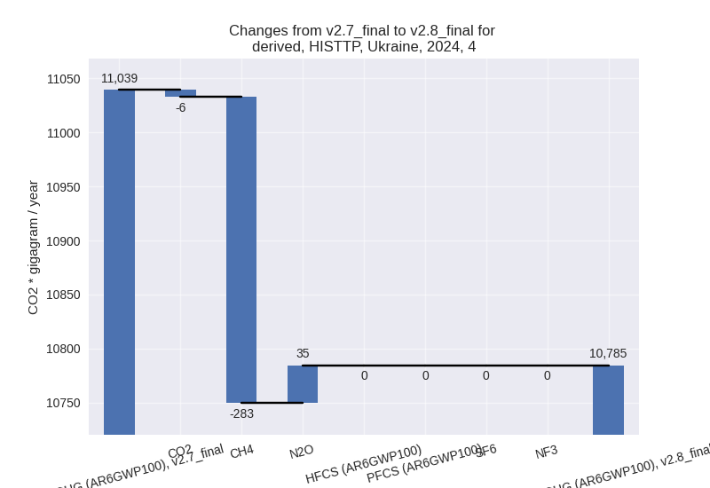
For 1990-2024 the changes per gas
are:
- 5: Total sectoral emissions in 2022 are 465.21 Gg
CO2 / year which is 0.2% of M.0.EL emissions. 2024 Emissions have
changed by 18.3% (75.07 Gg CO2 /
year). 1990-2024 Emissions have changed by 0.1% (1.07 Gg CO2 / year). For 2024 the
changes per gas
are:
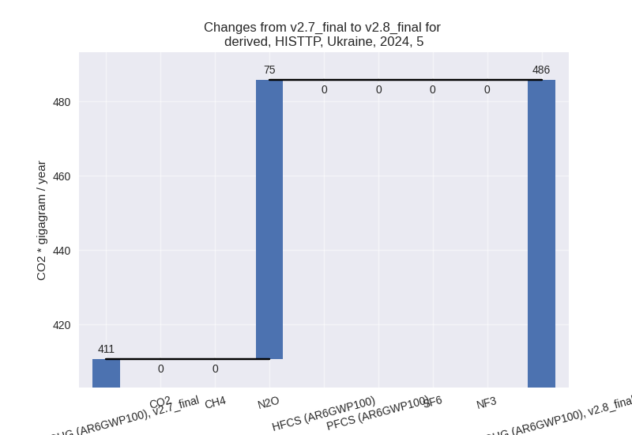